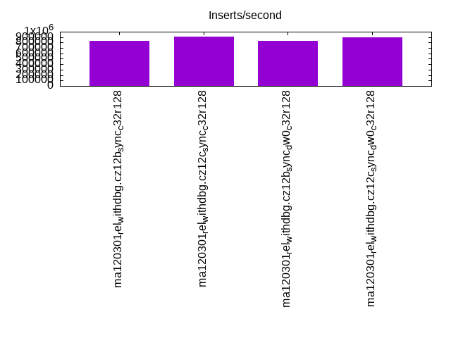
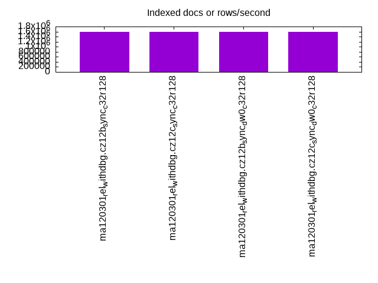
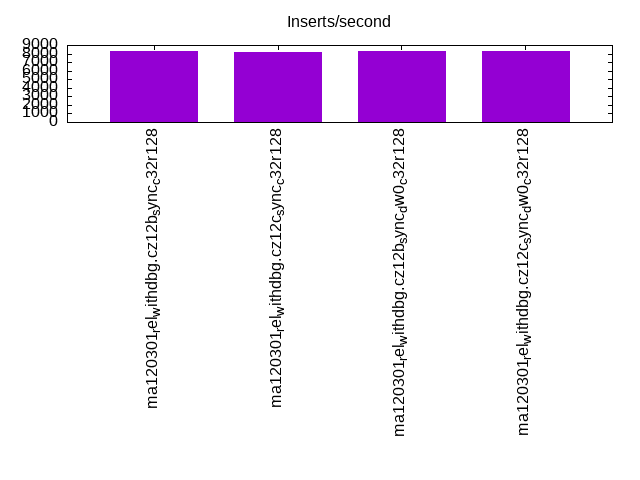
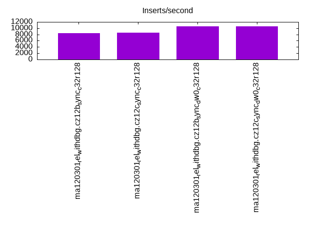
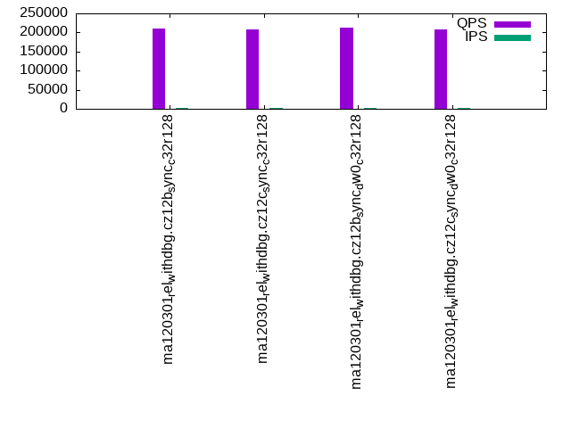
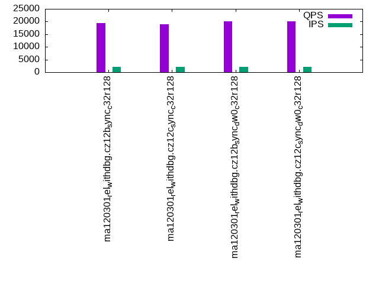
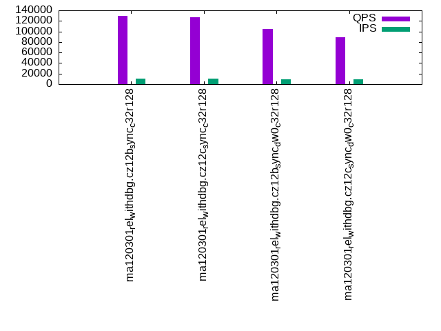
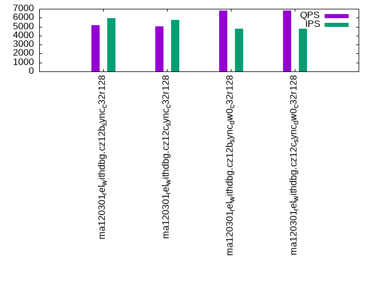
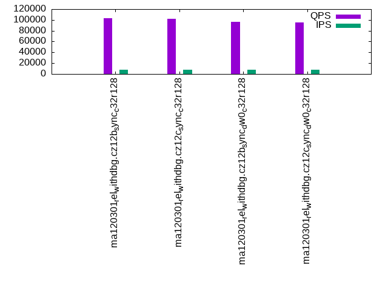
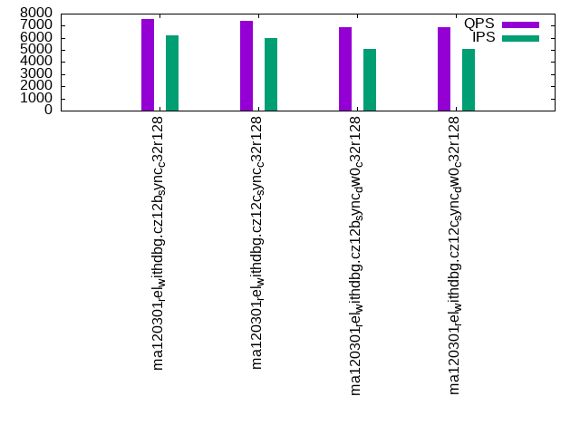

This is a report for the insert benchmark with 4000M docs and 20 client(s). It is generated by scripts (bash, awk, sed) and Tufte might not be impressed. An overview of the insert benchmark is here and a short update is here. Below, by DBMS, I mean DBMS+version.config. An example is my8020.c10b40 where my means MySQL, 8020 is version 8.0.20 and c10b40 is the name for the configuration file.
The test server has 48 cores, 128G RAM and 2 NVMe devices using SW RAID. The benchmark was run with 20 clients and there were 1 or 3 connections per client (1 for queries or inserts without rate limits, 1+1 for rate limited inserts+deletes). It uses 20 tables with a table per client. It loads 200M rows per table without secondary indexes, creates 3 secondary indexes per table, then inserts 4m+1m rows per table with a delete per insert to avoid growing the table. It then does 6 read+write tests for 3600s each that do queries as fast as possible with 100,100,500,500,1000,1000 inserts/s and the same for deletes/s per client concurrent with the queries. The database is larger than RAM and most tests are IO-bound except for the range query (qr*) tests that frequently have a cached working set. Clients and the DBMS share one server.
The tested DBMS are:
The numbers are inserts/s for l.i0, l.i1 and l.i2, indexed docs (or rows) /s for l.x and queries/s for qr100, qp100 thru qr1000, qp1000" The values are the average rate over the entire test for inserts (IPS) and queries (QPS). The range of values for IPS and QPS is split into 3 parts: bottom 25%, middle 50%, top 25%. Values in the bottom 25% have a red background, values in the top 25% have a green background and values in the middle have no color. A gray background is used for values that can be ignored because the DBMS did not sustain the target insert rate. Red backgrounds are not used when the minimum value is within 80% of the max value.
| dbms | l.i0 | l.x | l.i1 | l.i2 | qr100 | qp100 | qr500 | qp500 | qr1000 | qp1000 |
|---|---|---|---|---|---|---|---|---|---|---|
| ma120301_rel_withdbg.cz12b_sync_c32r128 | 829359 | 1581653 | 8284 | 8432 | 209134 | 19298 | 130110 | 5179 | 102737 | 7583 |
| ma120301_rel_withdbg.cz12c_sync_c32r128 | 904977 | 1590457 | 8189 | 8522 | 207878 | 19019 | 126355 | 5046 | 102508 | 7395 |
| ma120301_rel_withdbg.cz12b_sync_dw0_c32r128 | 836645 | 1600640 | 8327 | 10548 | 212192 | 20015 | 104454 | 6804 | 96242 | 6848 |
| ma120301_rel_withdbg.cz12c_sync_dw0_c32r128 | 898674 | 1601281 | 8267 | 10650 | 207584 | 20018 | 88536 | 6808 | 95841 | 6849 |
This table has relative throughput, throughput for the DBMS relative to the DBMS in the first line, using the absolute throughput from the previous table. Values less than 0.95 have a yellow background. Values greater than 1.05 have a blue background.
| dbms | l.i0 | l.x | l.i1 | l.i2 | qr100 | qp100 | qr500 | qp500 | qr1000 | qp1000 |
|---|---|---|---|---|---|---|---|---|---|---|
| ma120301_rel_withdbg.cz12b_sync_c32r128 | 1.00 | 1.00 | 1.00 | 1.00 | 1.00 | 1.00 | 1.00 | 1.00 | 1.00 | 1.00 |
| ma120301_rel_withdbg.cz12c_sync_c32r128 | 1.09 | 1.01 | 0.99 | 1.01 | 0.99 | 0.99 | 0.97 | 0.97 | 1.00 | 0.98 |
| ma120301_rel_withdbg.cz12b_sync_dw0_c32r128 | 1.01 | 1.01 | 1.01 | 1.25 | 1.01 | 1.04 | 0.80 | 1.31 | 0.94 | 0.90 |
| ma120301_rel_withdbg.cz12c_sync_dw0_c32r128 | 1.08 | 1.01 | 1.00 | 1.26 | 0.99 | 1.04 | 0.68 | 1.31 | 0.93 | 0.90 |
This lists the average rate of inserts/s for the tests that do inserts concurrent with queries. For such tests the query rate is listed in the table above. The read+write tests are setup so that the insert rate should match the target rate every second. Cells that are not at least 95% of the target have a red background to indicate a failure to satisfy the target.
| dbms | qr100.L1 | qp100.L2 | qr500.L3 | qp500.L4 | qr1000.L5 | qp1000.L6 |
|---|---|---|---|---|---|---|
| ma120301_rel_withdbg.cz12b_sync_c32r128 | 1987 | 1987 | 9936 | 5922 | 7652 | 6189 |
| ma120301_rel_withdbg.cz12c_sync_c32r128 | 1987 | 1987 | 9934 | 5743 | 7481 | 6018 |
| ma120301_rel_withdbg.cz12b_sync_dw0_c32r128 | 1987 | 1987 | 9481 | 4768 | 7882 | 5094 |
| ma120301_rel_withdbg.cz12c_sync_dw0_c32r128 | 1987 | 1987 | 8539 | 4743 | 7893 | 5103 |
| target | 2000 | 2000 | 10000 | 10000 | 20000 | 20000 |
l.i0: load without secondary indexes. Graphs for performance per 1-second interval are here.
Average throughput:

Insert response time histogram: each cell has the percentage of responses that take <= the time in the header and max is the max response time in seconds. For the max column values in the top 25% of the range have a red background and in the bottom 25% of the range have a green background. The red background is not used when the min value is within 80% of the max value.
| dbms | 256us | 1ms | 4ms | 16ms | 64ms | 256ms | 1s | 4s | 16s | gt | max |
|---|---|---|---|---|---|---|---|---|---|---|---|
| ma120301_rel_withdbg.cz12b_sync_c32r128 | 0.115 | 98.854 | 0.952 | 0.022 | 0.057 | nonzero | 0.410 | ||||
| ma120301_rel_withdbg.cz12c_sync_c32r128 | 6.819 | 91.926 | 1.032 | 0.221 | 0.002 | 0.144 | |||||
| ma120301_rel_withdbg.cz12b_sync_dw0_c32r128 | 0.101 | 99.073 | 0.747 | 0.014 | 0.063 | 0.002 | 0.318 | ||||
| ma120301_rel_withdbg.cz12c_sync_dw0_c32r128 | 6.444 | 92.223 | 1.156 | 0.176 | 0.001 | 0.097 |
Performance metrics for the DBMS listed above. Some are normalized by throughput, others are not. Legend for results is here.
ips qps rps rmbps wps wmbps rpq rkbpq wpi wkbpi csps cpups cspq cpupq dbgb1 dbgb2 rss maxop p50 p99 tag 829359 0 3 0.0 44219.6 353.8 0.000 0.000 0.053 0.437 573464 34.8 0.691 20 263.2 364.0 101.2 0.410 36361 24574 ma120301_rel_withdbg.cz12b_sync_c32r128 904977 0 5 0.2 12565.6 362.5 0.000 0.000 0.014 0.410 639005 43.8 0.706 23 263.2 364.5 100.2 0.144 35162 27770 ma120301_rel_withdbg.cz12c_sync_c32r128 836645 0 3 0.0 44014.8 353.4 0.000 0.000 0.053 0.433 543751 34.5 0.650 20 263.2 364.0 101.0 0.318 36860 24474 ma120301_rel_withdbg.cz12b_sync_dw0_c32r128 898674 0 4 0.0 12464.0 358.2 0.000 0.000 0.014 0.408 649757 44.0 0.723 24 263.2 364.5 100.2 0.097 34276 27770 ma120301_rel_withdbg.cz12c_sync_dw0_c32r128
Average values from iostat.
r/s rkB/s rrqm/s %rrqm r_await rareq-s w/s wkB/s wrqm/s %wrqm w_await wareq-s d/s dkB/s drqm/s %drqm d_await dareq-s f/s f_await aqu-sz %util 3.199 38.06 0.000 0.000 0.116 7.664 44219.6 362275 0.000 0.000 0.051 8.268 0.000 0.000 0.000 0.000 0.000 0.000 0.000 0.000 2.305 96.00 ma120301_rel_withdbg.cz12b_sync_c32r128 5.443 213.6 0.000 0.000 0.132 7.698 12565.6 371220 0.000 0.000 1.563 29.77 0.000 0.000 0.000 0.000 0.000 0.000 0.000 0.000 21.39 99.96 ma120301_rel_withdbg.cz12c_sync_c32r128 2.820 29.14 0.000 0.000 0.116 7.284 44014.8 361859 0.000 0.000 0.045 8.289 0.000 0.000 0.000 0.000 0.000 0.000 0.000 0.000 2.004 95.22 ma120301_rel_withdbg.cz12b_sync_dw0_c32r128 3.931 39.87 0.000 0.000 0.135 7.173 12464.0 366832 0.000 0.000 1.492 29.58 0.000 0.000 0.000 0.000 0.000 0.000 0.000 0.000 20.37 99.99 ma120301_rel_withdbg.cz12c_sync_dw0_c32r128
l.x: create secondary indexes.
Average throughput:

Performance metrics for the DBMS listed above. Some are normalized by throughput, others are not. Legend for results is here.
ips qps rps rmbps wps wmbps rpq rkbpq wpi wkbpi csps cpups cspq cpupq dbgb1 dbgb2 rss maxop p50 p99 tag 1581653 0 17210 1413.6 19849.2 1578.4 0.011 0.915 0.013 1.022 108712 24.0 0.069 7 557.5 658.3 100.6 0.004 NA NA ma120301_rel_withdbg.cz12b_sync_c32r128 1590457 0 17318 1422.0 19063.5 1575.2 0.011 0.916 0.012 1.014 105890 23.9 0.067 7 557.5 658.8 100.7 0.003 NA NA ma120301_rel_withdbg.cz12c_sync_c32r128 1600640 0 17420 1430.5 20093.6 1597.6 0.011 0.915 0.013 1.022 110296 24.7 0.069 7 557.5 658.3 100.6 0.004 NA NA ma120301_rel_withdbg.cz12b_sync_dw0_c32r128 1601281 0 17445 1433.4 19310.3 1589.0 0.011 0.917 0.012 1.016 108298 24.5 0.068 7 557.5 658.8 100.7 0.005 NA NA ma120301_rel_withdbg.cz12c_sync_dw0_c32r128
Average values from iostat.
r/s rkB/s rrqm/s %rrqm r_await rareq-s w/s wkB/s wrqm/s %wrqm w_await wareq-s d/s dkB/s drqm/s %drqm d_await dareq-s f/s f_await aqu-sz %util 17209.8 1447539 0.000 0.000 0.572 106.8 19849.2 1616270 0.000 0.000 30.38 93.85 0.000 0.000 0.000 0.000 0.000 0.000 0.000 0.000 347.1 95.29 ma120301_rel_withdbg.cz12b_sync_c32r128 17318.2 1456150 0.000 0.000 0.583 106.8 19063.5 1613007 0.000 0.000 34.27 97.09 0.000 0.000 0.000 0.000 0.000 0.000 0.000 0.000 441.6 97.32 ma120301_rel_withdbg.cz12c_sync_c32r128 17420.3 1464800 0.000 0.000 0.583 106.5 20093.6 1635967 0.000 0.000 18.36 94.04 0.000 0.000 0.000 0.000 0.000 0.000 0.000 0.000 253.7 96.94 ma120301_rel_withdbg.cz12b_sync_dw0_c32r128 17444.6 1467799 0.000 0.000 0.584 107.0 19310.3 1627103 0.000 0.000 24.36 97.59 0.000 0.000 0.000 0.000 0.000 0.000 0.000 0.000 307.8 96.04 ma120301_rel_withdbg.cz12c_sync_dw0_c32r128
l.i1: continue load after secondary indexes created with 50 inserts per transaction. Graphs for performance per 1-second interval are here.
Average throughput:

Insert response time histogram: each cell has the percentage of responses that take <= the time in the header and max is the max response time in seconds. For the max column values in the top 25% of the range have a red background and in the bottom 25% of the range have a green background. The red background is not used when the min value is within 80% of the max value.
| dbms | 256us | 1ms | 4ms | 16ms | 64ms | 256ms | 1s | 4s | 16s | gt | max |
|---|---|---|---|---|---|---|---|---|---|---|---|
| ma120301_rel_withdbg.cz12b_sync_c32r128 | 0.187 | 29.096 | 51.854 | 18.862 | 0.873 | ||||||
| ma120301_rel_withdbg.cz12c_sync_c32r128 | 0.225 | 27.566 | 52.860 | 19.349 | nonzero | 1.080 | |||||
| ma120301_rel_withdbg.cz12b_sync_dw0_c32r128 | 0.243 | 17.490 | 67.238 | 15.029 | 0.426 | ||||||
| ma120301_rel_withdbg.cz12c_sync_dw0_c32r128 | 0.272 | 16.446 | 68.097 | 15.185 | 0.500 |
Delete response time histogram: each cell has the percentage of responses that take <= the time in the header and max is the max response time in seconds. For the max column values in the top 25% of the range have a red background and in the bottom 25% of the range have a green background. The red background is not used when the min value is within 80% of the max value.
| dbms | 256us | 1ms | 4ms | 16ms | 64ms | 256ms | 1s | 4s | 16s | gt | max |
|---|---|---|---|---|---|---|---|---|---|---|---|
| ma120301_rel_withdbg.cz12b_sync_c32r128 | 1.935 | 50.243 | 29.137 | 18.685 | 0.865 | ||||||
| ma120301_rel_withdbg.cz12c_sync_c32r128 | 2.159 | 48.836 | 29.848 | 19.157 | nonzero | 1.069 | |||||
| ma120301_rel_withdbg.cz12b_sync_dw0_c32r128 | 2.406 | 44.881 | 37.976 | 14.737 | 0.429 | ||||||
| ma120301_rel_withdbg.cz12c_sync_dw0_c32r128 | 2.829 | 43.398 | 38.866 | 14.908 | 0.491 |
Performance metrics for the DBMS listed above. Some are normalized by throughput, others are not. Legend for results is here.
ips qps rps rmbps wps wmbps rpq rkbpq wpi wkbpi csps cpups cspq cpupq dbgb1 dbgb2 rss maxop p50 p99 tag 8284 0 49982 780.9 54096.6 1350.1 6.034 96.532 6.530 166.885 1057958 15.3 127.710 887 730.1 832.4 100.4 0.873 450 150 ma120301_rel_withdbg.cz12b_sync_c32r128 8189 0 49373 771.4 50194.9 1325.6 6.029 96.461 6.129 165.756 1040166 15.0 127.018 879 730.2 832.9 100.4 1.080 450 150 ma120301_rel_withdbg.cz12c_sync_c32r128 8327 0 50227 784.8 48778.5 747.1 6.032 96.503 5.858 91.875 1197085 16.2 143.756 934 730.4 832.7 100.3 0.426 450 150 ma120301_rel_withdbg.cz12b_sync_dw0_c32r128 8267 0 49868 779.2 44576.4 729.7 6.032 96.511 5.392 90.384 1189104 16.0 143.837 929 730.2 833.0 100.4 0.500 450 150 ma120301_rel_withdbg.cz12c_sync_dw0_c32r128
Average values from iostat.
r/s rkB/s rrqm/s %rrqm r_await rareq-s w/s wkB/s wrqm/s %wrqm w_await wareq-s d/s dkB/s drqm/s %drqm d_await dareq-s f/s f_await aqu-sz %util 49982.4 799684 0.000 0.000 0.187 16.00 54096.6 1382492 0.000 0.000 0.153 25.67 0.000 0.000 0.000 0.000 0.000 0.000 0.000 0.000 17.94 100.00 ma120301_rel_withdbg.cz12b_sync_c32r128 49372.7 789930 0.000 0.000 0.191 16.00 50194.9 1357395 0.000 0.000 0.177 27.18 0.000 0.000 0.000 0.000 0.000 0.000 0.000 0.000 18.70 100.00 ma120301_rel_withdbg.cz12c_sync_c32r128 50227.3 803598 0.000 0.000 0.125 16.00 48778.5 765058 0.000 0.000 0.159 15.71 0.000 0.000 0.000 0.000 0.000 0.000 0.000 0.000 14.52 100.00 ma120301_rel_withdbg.cz12b_sync_dw0_c32r128 49868.0 797860 0.000 0.000 0.126 16.00 44576.4 747201 0.000 0.000 0.186 16.78 0.000 0.000 0.000 0.000 0.000 0.000 0.000 0.000 15.56 100.00 ma120301_rel_withdbg.cz12c_sync_dw0_c32r128
l.i2: continue load after secondary indexes created with 5 inserts per transaction. Graphs for performance per 1-second interval are here.
Average throughput:

Insert response time histogram: each cell has the percentage of responses that take <= the time in the header and max is the max response time in seconds. For the max column values in the top 25% of the range have a red background and in the bottom 25% of the range have a green background. The red background is not used when the min value is within 80% of the max value.
| dbms | 256us | 1ms | 4ms | 16ms | 64ms | 256ms | 1s | 4s | 16s | gt | max |
|---|---|---|---|---|---|---|---|---|---|---|---|
| ma120301_rel_withdbg.cz12b_sync_c32r128 | 0.005 | 37.292 | 37.324 | 25.264 | 0.115 | 0.204 | |||||
| ma120301_rel_withdbg.cz12c_sync_c32r128 | 0.381 | 51.545 | 20.340 | 27.617 | 0.116 | 0.209 | |||||
| ma120301_rel_withdbg.cz12b_sync_dw0_c32r128 | 0.009 | 64.732 | 13.984 | 21.229 | 0.045 | 0.154 | |||||
| ma120301_rel_withdbg.cz12c_sync_dw0_c32r128 | 0.645 | 67.091 | 9.496 | 22.720 | 0.048 | 0.162 |
Delete response time histogram: each cell has the percentage of responses that take <= the time in the header and max is the max response time in seconds. For the max column values in the top 25% of the range have a red background and in the bottom 25% of the range have a green background. The red background is not used when the min value is within 80% of the max value.
| dbms | 256us | 1ms | 4ms | 16ms | 64ms | 256ms | 1s | 4s | 16s | gt | max |
|---|---|---|---|---|---|---|---|---|---|---|---|
| ma120301_rel_withdbg.cz12b_sync_c32r128 | 0.014 | 45.299 | 29.745 | 24.859 | 0.083 | 0.198 | |||||
| ma120301_rel_withdbg.cz12c_sync_c32r128 | 0.891 | 59.147 | 12.542 | 27.331 | 0.089 | 0.253 | |||||
| ma120301_rel_withdbg.cz12b_sync_dw0_c32r128 | 0.024 | 70.430 | 8.545 | 20.973 | 0.028 | 0.141 | |||||
| ma120301_rel_withdbg.cz12c_sync_dw0_c32r128 | 1.523 | 68.810 | 7.235 | 22.405 | 0.026 | 0.144 |
Performance metrics for the DBMS listed above. Some are normalized by throughput, others are not. Legend for results is here.
ips qps rps rmbps wps wmbps rpq rkbpq wpi wkbpi csps cpups cspq cpupq dbgb1 dbgb2 rss maxop p50 p99 tag 8432 0 57103 892.2 60286.4 1443.0 6.772 108.358 7.150 175.253 740836 14.0 87.863 797 730.1 832.4 100.3 0.204 559 95 ma120301_rel_withdbg.cz12b_sync_c32r128 8522 0 57756 902.4 52644.9 1426.0 6.778 108.442 6.178 171.360 721050 13.8 84.615 777 730.2 832.9 100.3 0.209 569 95 ma120301_rel_withdbg.cz12c_sync_c32r128 10548 0 71003 1109.4 67942.6 972.9 6.731 107.696 6.441 94.447 917607 16.7 86.989 760 730.4 832.7 100.3 0.154 724 105 ma120301_rel_withdbg.cz12b_sync_dw0_c32r128 10650 0 71586 1118.5 58521.2 946.5 6.722 107.551 5.495 91.007 909271 16.3 85.381 735 730.2 833.0 100.3 0.162 725 105 ma120301_rel_withdbg.cz12c_sync_dw0_c32r128
Average values from iostat.
r/s rkB/s rrqm/s %rrqm r_await rareq-s w/s wkB/s wrqm/s %wrqm w_await wareq-s d/s dkB/s drqm/s %drqm d_await dareq-s f/s f_await aqu-sz %util 57102.6 913643 0.000 0.000 0.196 16.00 60286.4 1477678 0.000 0.000 0.110 24.93 0.000 0.000 0.000 0.000 0.000 0.000 0.000 0.000 18.29 100.00 ma120301_rel_withdbg.cz12b_sync_c32r128 57756.0 924085 0.000 0.000 0.192 16.00 52644.9 1460242 0.000 0.000 0.110 27.83 0.000 0.000 0.000 0.000 0.000 0.000 0.000 0.000 17.30 100.00 ma120301_rel_withdbg.cz12c_sync_c32r128 71002.7 1136033 0.000 0.000 0.142 16.00 67942.6 996277 0.000 0.000 0.118 15.00 0.000 0.000 0.000 0.000 0.000 0.000 0.000 0.000 18.85 100.00 ma120301_rel_withdbg.cz12b_sync_dw0_c32r128 71585.9 1145374 0.000 0.000 0.140 16.00 58521.2 969193 0.000 0.000 0.152 16.61 0.000 0.000 0.000 0.000 0.000 0.000 0.000 0.000 20.15 100.00 ma120301_rel_withdbg.cz12c_sync_dw0_c32r128
qr100.L1: range queries with 100 insert/s per client. Graphs for performance per 1-second interval are here.
Average throughput:

Query response time histogram: each cell has the percentage of responses that take <= the time in the header and max is the max response time in seconds. For max values in the top 25% of the range have a red background and in the bottom 25% of the range have a green background. The red background is not used when the min value is within 80% of the max value.
| dbms | 256us | 1ms | 4ms | 16ms | 64ms | 256ms | 1s | 4s | 16s | gt | max |
|---|---|---|---|---|---|---|---|---|---|---|---|
| ma120301_rel_withdbg.cz12b_sync_c32r128 | 99.605 | 0.371 | 0.024 | 0.001 | nonzero | nonzero | 0.103 | ||||
| ma120301_rel_withdbg.cz12c_sync_c32r128 | 99.598 | 0.376 | 0.025 | 0.001 | nonzero | nonzero | 0.087 | ||||
| ma120301_rel_withdbg.cz12b_sync_dw0_c32r128 | 99.645 | 0.334 | 0.020 | 0.001 | nonzero | nonzero | 0.119 | ||||
| ma120301_rel_withdbg.cz12c_sync_dw0_c32r128 | 99.631 | 0.347 | 0.021 | 0.001 | nonzero | nonzero | 0.074 |
Insert response time histogram: each cell has the percentage of responses that take <= the time in the header and max is the max response time in seconds. For max values in the top 25% of the range have a red background and in the bottom 25% of the range have a green background. The red background is not used when the min value is within 80% of the max value.
| dbms | 256us | 1ms | 4ms | 16ms | 64ms | 256ms | 1s | 4s | 16s | gt | max |
|---|---|---|---|---|---|---|---|---|---|---|---|
| ma120301_rel_withdbg.cz12b_sync_c32r128 | 28.757 | 71.129 | 0.114 | 0.187 | |||||||
| ma120301_rel_withdbg.cz12c_sync_c32r128 | 32.081 | 67.693 | 0.226 | 0.172 | |||||||
| ma120301_rel_withdbg.cz12b_sync_dw0_c32r128 | 26.806 | 72.906 | 0.288 | 0.159 | |||||||
| ma120301_rel_withdbg.cz12c_sync_dw0_c32r128 | 33.060 | 66.417 | 0.523 | 0.139 |
Delete response time histogram: each cell has the percentage of responses that take <= the time in the header and max is the max response time in seconds. For max values in the top 25% of the range have a red background and in the bottom 25% of the range have a green background. The red background is not used when the min value is within 80% of the max value.
| dbms | 256us | 1ms | 4ms | 16ms | 64ms | 256ms | 1s | 4s | 16s | gt | max |
|---|---|---|---|---|---|---|---|---|---|---|---|
| ma120301_rel_withdbg.cz12b_sync_c32r128 | 59.138 | 40.774 | 0.088 | 0.185 | |||||||
| ma120301_rel_withdbg.cz12c_sync_c32r128 | 59.616 | 40.235 | 0.149 | 0.146 | |||||||
| ma120301_rel_withdbg.cz12b_sync_dw0_c32r128 | 69.083 | 30.799 | 0.117 | 0.111 | |||||||
| ma120301_rel_withdbg.cz12c_sync_dw0_c32r128 | 75.233 | 24.557 | 0.210 | 0.119 |
Performance metrics for the DBMS listed above. Some are normalized by throughput, others are not. Legend for results is here.
ips qps rps rmbps wps wmbps rpq rkbpq wpi wkbpi csps cpups cspq cpupq dbgb1 dbgb2 rss maxop p50 p99 tag 1987 209134 8805 137.6 7749.0 199.7 0.042 0.674 3.900 102.927 1280967 45.8 6.125 105 730.1 832.4 100.3 0.103 10597 9465 ma120301_rel_withdbg.cz12b_sync_c32r128 1987 207878 8805 137.6 7230.5 199.6 0.042 0.678 3.638 102.826 1271581 45.6 6.117 105 730.2 832.9 100.4 0.087 10533 9574 ma120301_rel_withdbg.cz12c_sync_c32r128 1987 212192 8809 137.6 6921.1 107.3 0.042 0.664 3.484 55.282 1302788 45.7 6.140 103 730.4 832.7 100.4 0.119 10756 9622 ma120301_rel_withdbg.cz12b_sync_dw0_c32r128 1987 207584 8800 137.5 6425.8 106.5 0.042 0.678 3.234 54.873 1276625 45.5 6.150 105 730.2 833.0 100.4 0.074 10520 9465 ma120301_rel_withdbg.cz12c_sync_dw0_c32r128
Average values from iostat.
r/s rkB/s rrqm/s %rrqm r_await rareq-s w/s wkB/s wrqm/s %wrqm w_await wareq-s d/s dkB/s drqm/s %drqm d_await dareq-s f/s f_await aqu-sz %util 8804.6 140871 0.000 0.000 0.139 16.00 7749.0 204485 0.000 0.000 0.082 25.81 0.000 0.000 0.000 0.000 0.000 0.000 0.000 0.000 1.816 24.86 ma120301_rel_withdbg.cz12b_sync_c32r128 8805.0 140882 0.000 0.000 0.138 16.00 7230.5 204347 0.000 0.000 0.092 29.13 0.000 0.000 0.000 0.000 0.000 0.000 0.000 0.000 1.775 24.63 ma120301_rel_withdbg.cz12c_sync_c32r128 8809.1 140944 0.000 0.000 0.114 16.00 6921.1 109828 0.000 0.000 0.107 15.82 0.000 0.000 0.000 0.000 0.000 0.000 0.000 0.000 1.626 22.79 ma120301_rel_withdbg.cz12b_sync_dw0_c32r128 8800.3 140794 0.000 0.000 0.114 16.00 6425.8 109016 0.000 0.000 0.085 18.28 0.000 0.000 0.000 0.000 0.000 0.000 0.000 0.000 1.557 22.51 ma120301_rel_withdbg.cz12c_sync_dw0_c32r128
qp100.L2: point queries with 100 insert/s per client. Graphs for performance per 1-second interval are here.
Average throughput:

Query response time histogram: each cell has the percentage of responses that take <= the time in the header and max is the max response time in seconds. For max values in the top 25% of the range have a red background and in the bottom 25% of the range have a green background. The red background is not used when the min value is within 80% of the max value.
| dbms | 256us | 1ms | 4ms | 16ms | 64ms | 256ms | 1s | 4s | 16s | gt | max |
|---|---|---|---|---|---|---|---|---|---|---|---|
| ma120301_rel_withdbg.cz12b_sync_c32r128 | 0.020 | 63.680 | 36.228 | 0.070 | 0.003 | nonzero | 0.129 | ||||
| ma120301_rel_withdbg.cz12c_sync_c32r128 | 0.019 | 61.638 | 38.255 | 0.083 | 0.005 | nonzero | 0.134 | ||||
| ma120301_rel_withdbg.cz12b_sync_dw0_c32r128 | 0.023 | 66.686 | 33.183 | 0.066 | 0.041 | 0.001 | 0.177 | ||||
| ma120301_rel_withdbg.cz12c_sync_dw0_c32r128 | 0.021 | 66.997 | 32.855 | 0.080 | 0.045 | 0.001 | 0.195 |
Insert response time histogram: each cell has the percentage of responses that take <= the time in the header and max is the max response time in seconds. For max values in the top 25% of the range have a red background and in the bottom 25% of the range have a green background. The red background is not used when the min value is within 80% of the max value.
| dbms | 256us | 1ms | 4ms | 16ms | 64ms | 256ms | 1s | 4s | 16s | gt | max |
|---|---|---|---|---|---|---|---|---|---|---|---|
| ma120301_rel_withdbg.cz12b_sync_c32r128 | 0.074 | 99.075 | 0.851 | 0.241 | |||||||
| ma120301_rel_withdbg.cz12c_sync_c32r128 | 0.074 | 98.415 | 1.511 | 0.228 | |||||||
| ma120301_rel_withdbg.cz12b_sync_dw0_c32r128 | 0.101 | 90.964 | 8.847 | 0.088 | 0.412 | ||||||
| ma120301_rel_withdbg.cz12c_sync_dw0_c32r128 | 0.109 | 90.469 | 9.312 | 0.110 | 0.421 |
Delete response time histogram: each cell has the percentage of responses that take <= the time in the header and max is the max response time in seconds. For max values in the top 25% of the range have a red background and in the bottom 25% of the range have a green background. The red background is not used when the min value is within 80% of the max value.
| dbms | 256us | 1ms | 4ms | 16ms | 64ms | 256ms | 1s | 4s | 16s | gt | max |
|---|---|---|---|---|---|---|---|---|---|---|---|
| ma120301_rel_withdbg.cz12b_sync_c32r128 | 0.112 | 99.280 | 0.608 | 0.198 | |||||||
| ma120301_rel_withdbg.cz12c_sync_c32r128 | 0.119 | 98.717 | 1.165 | 0.225 | |||||||
| ma120301_rel_withdbg.cz12b_sync_dw0_c32r128 | 0.169 | 93.319 | 6.464 | 0.048 | 0.415 | ||||||
| ma120301_rel_withdbg.cz12c_sync_dw0_c32r128 | 0.190 | 92.931 | 6.804 | 0.075 | 0.433 |
Performance metrics for the DBMS listed above. Some are normalized by throughput, others are not. Legend for results is here.
ips qps rps rmbps wps wmbps rpq rkbpq wpi wkbpi csps cpups cspq cpupq dbgb1 dbgb2 rss maxop p50 p99 tag 1987 19298 139715 2183.0 12147.2 318.5 7.240 115.835 6.112 164.103 574737 15.1 29.782 376 730.1 832.4 100.4 0.129 991 543 ma120301_rel_withdbg.cz12b_sync_c32r128 1987 19019 137695 2151.5 11532.1 315.8 7.240 115.836 5.803 162.702 579736 15.2 30.482 384 730.2 832.9 100.4 0.134 975 543 ma120301_rel_withdbg.cz12c_sync_c32r128 1987 20015 143946 2249.1 10917.3 168.3 7.192 115.069 5.495 86.748 619407 15.4 30.947 369 730.4 832.7 100.4 0.177 1023 687 ma120301_rel_withdbg.cz12b_sync_dw0_c32r128 1987 20018 144063 2251.0 10297.5 166.4 7.197 115.149 5.182 85.750 622004 15.5 31.073 372 730.2 833.0 100.4 0.195 1023 640 ma120301_rel_withdbg.cz12c_sync_dw0_c32r128
Average values from iostat.
r/s rkB/s rrqm/s %rrqm r_await rareq-s w/s wkB/s wrqm/s %wrqm w_await wareq-s d/s dkB/s drqm/s %drqm d_await dareq-s f/s f_await aqu-sz %util 139715 2235434 0.000 0.000 0.109 16.00 12147.2 326122 0.000 0.000 0.096 26.80 0.000 0.000 0.000 0.000 0.000 0.000 0.000 0.000 16.32 100.00 ma120301_rel_withdbg.cz12b_sync_c32r128 137695 2203105 0.000 0.000 0.112 16.00 11532.1 323337 0.000 0.000 0.101 28.08 0.000 0.000 0.000 0.000 0.000 0.000 0.000 0.000 16.37 99.94 ma120301_rel_withdbg.cz12c_sync_c32r128 143946 2303121 0.000 0.000 0.101 16.00 10917.3 172342 0.000 0.000 0.050 15.77 0.000 0.000 0.000 0.000 0.000 0.000 0.000 0.000 15.11 99.94 ma120301_rel_withdbg.cz12b_sync_dw0_c32r128 144063 2304996 0.000 0.000 0.101 16.00 10297.5 170411 0.000 0.000 0.061 16.59 0.000 0.000 0.000 0.000 0.000 0.000 0.000 0.000 16.01 100.00 ma120301_rel_withdbg.cz12c_sync_dw0_c32r128
qr500.L3: range queries with 500 insert/s per client. Graphs for performance per 1-second interval are here.
Average throughput:

Query response time histogram: each cell has the percentage of responses that take <= the time in the header and max is the max response time in seconds. For max values in the top 25% of the range have a red background and in the bottom 25% of the range have a green background. The red background is not used when the min value is within 80% of the max value.
| dbms | 256us | 1ms | 4ms | 16ms | 64ms | 256ms | 1s | 4s | 16s | gt | max |
|---|---|---|---|---|---|---|---|---|---|---|---|
| ma120301_rel_withdbg.cz12b_sync_c32r128 | 95.391 | 4.016 | 0.411 | 0.154 | 0.027 | 0.001 | 0.253 | ||||
| ma120301_rel_withdbg.cz12c_sync_c32r128 | 95.059 | 4.282 | 0.460 | 0.168 | 0.029 | 0.001 | 0.228 | ||||
| ma120301_rel_withdbg.cz12b_sync_dw0_c32r128 | 93.320 | 5.597 | 0.713 | 0.298 | 0.072 | nonzero | 0.153 | ||||
| ma120301_rel_withdbg.cz12c_sync_dw0_c32r128 | 90.982 | 7.444 | 1.108 | 0.372 | 0.094 | nonzero | 0.146 |
Insert response time histogram: each cell has the percentage of responses that take <= the time in the header and max is the max response time in seconds. For max values in the top 25% of the range have a red background and in the bottom 25% of the range have a green background. The red background is not used when the min value is within 80% of the max value.
| dbms | 256us | 1ms | 4ms | 16ms | 64ms | 256ms | 1s | 4s | 16s | gt | max |
|---|---|---|---|---|---|---|---|---|---|---|---|
| ma120301_rel_withdbg.cz12b_sync_c32r128 | 3.854 | 68.963 | 27.044 | 0.139 | 0.433 | ||||||
| ma120301_rel_withdbg.cz12c_sync_c32r128 | 4.683 | 67.451 | 27.705 | 0.161 | 0.428 | ||||||
| ma120301_rel_withdbg.cz12b_sync_dw0_c32r128 | 7.253 | 35.290 | 55.492 | 1.965 | 0.412 | ||||||
| ma120301_rel_withdbg.cz12c_sync_dw0_c32r128 | 1.123 | 20.763 | 69.304 | 8.810 | 0.388 |
Delete response time histogram: each cell has the percentage of responses that take <= the time in the header and max is the max response time in seconds. For max values in the top 25% of the range have a red background and in the bottom 25% of the range have a green background. The red background is not used when the min value is within 80% of the max value.
| dbms | 256us | 1ms | 4ms | 16ms | 64ms | 256ms | 1s | 4s | 16s | gt | max |
|---|---|---|---|---|---|---|---|---|---|---|---|
| ma120301_rel_withdbg.cz12b_sync_c32r128 | 14.661 | 61.473 | 23.807 | 0.059 | 0.390 | ||||||
| ma120301_rel_withdbg.cz12c_sync_c32r128 | 15.653 | 59.892 | 24.384 | 0.071 | 0.399 | ||||||
| ma120301_rel_withdbg.cz12b_sync_dw0_c32r128 | 16.628 | 36.213 | 45.258 | 1.901 | 0.409 | ||||||
| ma120301_rel_withdbg.cz12c_sync_dw0_c32r128 | 5.102 | 29.880 | 56.372 | 8.646 | 0.404 |
Performance metrics for the DBMS listed above. Some are normalized by throughput, others are not. Legend for results is here.
ips qps rps rmbps wps wmbps rpq rkbpq wpi wkbpi csps cpups cspq cpupq dbgb1 dbgb2 rss maxop p50 p99 tag 9936 130110 41826 653.5 41500.0 1055.9 0.321 5.143 4.177 108.813 1538759 47.1 11.827 174 730.1 832.4 100.4 0.253 6441 3580 ma120301_rel_withdbg.cz12b_sync_c32r128 9934 126355 41751 652.3 37793.9 1041.7 0.330 5.287 3.805 107.382 1518795 46.6 12.020 177 730.2 832.9 100.4 0.228 6265 3421 ma120301_rel_withdbg.cz12c_sync_c32r128 9481 104454 38399 600.0 36624.1 543.7 0.368 5.882 3.863 58.726 1643657 42.6 15.736 196 730.6 832.9 100.4 0.153 4795 2078 ma120301_rel_withdbg.cz12b_sync_dw0_c32r128 8539 88536 40118 626.8 35034.1 564.5 0.453 7.250 4.103 67.700 1616995 41.8 18.264 227 730.4 833.2 100.4 0.146 4219 1886 ma120301_rel_withdbg.cz12c_sync_dw0_c32r128
Average values from iostat.
r/s rkB/s rrqm/s %rrqm r_await rareq-s w/s wkB/s wrqm/s %wrqm w_await wareq-s d/s dkB/s drqm/s %drqm d_await dareq-s f/s f_await aqu-sz %util 41825.9 669208 0.000 0.000 0.175 16.00 41500.0 1081225 0.000 0.000 0.077 26.02 0.000 0.000 0.000 0.000 0.000 0.000 0.000 0.000 10.41 90.81 ma120301_rel_withdbg.cz12b_sync_c32r128 41751.2 667985 0.000 0.000 0.174 16.00 37793.9 1066696 0.000 0.000 0.077 28.25 0.000 0.000 0.000 0.000 0.000 0.000 0.000 0.000 10.09 91.02 ma120301_rel_withdbg.cz12c_sync_c32r128 38398.7 614370 0.000 0.000 0.113 16.00 36624.1 556783 0.000 0.000 0.040 15.17 0.000 0.000 0.000 0.000 0.000 0.000 0.000 0.000 5.844 96.41 ma120301_rel_withdbg.cz12b_sync_dw0_c32r128 40118.2 641885 0.000 0.000 0.110 16.00 35034.1 578080 0.000 0.000 0.029 16.52 0.000 0.000 0.000 0.000 0.000 0.000 0.000 0.000 5.502 99.34 ma120301_rel_withdbg.cz12c_sync_dw0_c32r128
qp500.L4: point queries with 500 insert/s per client. Graphs for performance per 1-second interval are here.
Average throughput:

Query response time histogram: each cell has the percentage of responses that take <= the time in the header and max is the max response time in seconds. For max values in the top 25% of the range have a red background and in the bottom 25% of the range have a green background. The red background is not used when the min value is within 80% of the max value.
| dbms | 256us | 1ms | 4ms | 16ms | 64ms | 256ms | 1s | 4s | 16s | gt | max |
|---|---|---|---|---|---|---|---|---|---|---|---|
| ma120301_rel_withdbg.cz12b_sync_c32r128 | nonzero | 6.853 | 77.673 | 10.751 | 4.657 | 0.066 | 0.183 | ||||
| ma120301_rel_withdbg.cz12c_sync_c32r128 | nonzero | 5.982 | 77.665 | 11.441 | 4.843 | 0.069 | 0.253 | ||||
| ma120301_rel_withdbg.cz12b_sync_dw0_c32r128 | nonzero | 12.615 | 81.805 | 2.864 | 2.241 | 0.475 | 0.001 | 0.519 | |||
| ma120301_rel_withdbg.cz12c_sync_dw0_c32r128 | nonzero | 12.507 | 82.051 | 2.726 | 2.230 | 0.485 | 0.001 | 0.407 |
Insert response time histogram: each cell has the percentage of responses that take <= the time in the header and max is the max response time in seconds. For max values in the top 25% of the range have a red background and in the bottom 25% of the range have a green background. The red background is not used when the min value is within 80% of the max value.
| dbms | 256us | 1ms | 4ms | 16ms | 64ms | 256ms | 1s | 4s | 16s | gt | max |
|---|---|---|---|---|---|---|---|---|---|---|---|
| ma120301_rel_withdbg.cz12b_sync_c32r128 | 0.053 | 18.364 | 56.194 | 25.389 | 0.654 | ||||||
| ma120301_rel_withdbg.cz12c_sync_c32r128 | 0.056 | 14.819 | 58.629 | 26.496 | 0.746 | ||||||
| ma120301_rel_withdbg.cz12b_sync_dw0_c32r128 | 0.052 | 4.903 | 53.291 | 41.753 | nonzero | 1.160 | |||||
| ma120301_rel_withdbg.cz12c_sync_dw0_c32r128 | 0.081 | 4.700 | 52.909 | 42.310 | nonzero | 1.038 |
Delete response time histogram: each cell has the percentage of responses that take <= the time in the header and max is the max response time in seconds. For max values in the top 25% of the range have a red background and in the bottom 25% of the range have a green background. The red background is not used when the min value is within 80% of the max value.
| dbms | 256us | 1ms | 4ms | 16ms | 64ms | 256ms | 1s | 4s | 16s | gt | max |
|---|---|---|---|---|---|---|---|---|---|---|---|
| ma120301_rel_withdbg.cz12b_sync_c32r128 | 0.075 | 19.748 | 57.578 | 22.599 | 0.606 | ||||||
| ma120301_rel_withdbg.cz12c_sync_c32r128 | 0.072 | 16.145 | 60.080 | 23.703 | 0.694 | ||||||
| ma120301_rel_withdbg.cz12b_sync_dw0_c32r128 | 0.096 | 14.125 | 50.050 | 35.728 | 0.989 | ||||||
| ma120301_rel_withdbg.cz12c_sync_dw0_c32r128 | 0.133 | 14.123 | 49.677 | 36.066 | nonzero | 1.105 |
Performance metrics for the DBMS listed above. Some are normalized by throughput, others are not. Legend for results is here.
ips qps rps rmbps wps wmbps rpq rkbpq wpi wkbpi csps cpups cspq cpupq dbgb1 dbgb2 rss maxop p50 p99 tag 5922 5179 75958 1186.8 35933.0 924.0 14.665 234.646 6.068 159.776 1195057 18.2 230.733 1687 730.2 832.6 100.4 0.183 128 48 ma120301_rel_withdbg.cz12b_sync_c32r128 5743 5046 73757 1152.4 32465.6 888.9 14.617 233.863 5.653 158.484 1189126 17.9 235.652 1703 730.3 833.2 100.4 0.253 128 48 ma120301_rel_withdbg.cz12c_sync_c32r128 4768 6804 87984 1374.7 30966.3 469.4 12.932 206.905 6.495 100.818 1292576 17.6 189.978 1242 730.6 832.9 100.4 0.519 192 64 ma120301_rel_withdbg.cz12b_sync_dw0_c32r128 4743 6808 87847 1372.6 28835.4 461.5 12.904 206.469 6.080 99.640 1290339 17.5 189.544 1234 730.4 833.3 100.4 0.407 192 64 ma120301_rel_withdbg.cz12c_sync_dw0_c32r128
Average values from iostat.
r/s rkB/s rrqm/s %rrqm r_await rareq-s w/s wkB/s wrqm/s %wrqm w_await wareq-s d/s dkB/s drqm/s %drqm d_await dareq-s f/s f_await aqu-sz %util 75958.0 1215327 0.000 0.000 0.165 16.00 35933.0 946192 0.000 0.000 0.099 26.15 0.000 0.000 0.000 0.000 0.000 0.000 0.000 0.000 17.92 100.00 ma120301_rel_withdbg.cz12b_sync_c32r128 73756.6 1180097 0.000 0.000 0.168 16.00 32465.6 910239 0.000 0.000 0.101 28.04 0.000 0.000 0.000 0.000 0.000 0.000 0.000 0.000 17.31 100.00 ma120301_rel_withdbg.cz12c_sync_c32r128 87983.8 1407738 0.000 0.000 0.126 16.00 30966.3 480650 0.000 0.000 0.075 15.42 0.000 0.000 0.000 0.000 0.000 0.000 0.000 0.000 13.87 100.00 ma120301_rel_withdbg.cz12b_sync_dw0_c32r128 87847.4 1405555 0.000 0.000 0.126 16.00 28835.4 472591 0.000 0.000 0.083 16.41 0.000 0.000 0.000 0.000 0.000 0.000 0.000 0.000 13.90 100.00 ma120301_rel_withdbg.cz12c_sync_dw0_c32r128
qr1000.L5: range queries with 1000 insert/s per client. Graphs for performance per 1-second interval are here.
Average throughput:

Query response time histogram: each cell has the percentage of responses that take <= the time in the header and max is the max response time in seconds. For max values in the top 25% of the range have a red background and in the bottom 25% of the range have a green background. The red background is not used when the min value is within 80% of the max value.
| dbms | 256us | 1ms | 4ms | 16ms | 64ms | 256ms | 1s | 4s | 16s | gt | max |
|---|---|---|---|---|---|---|---|---|---|---|---|
| ma120301_rel_withdbg.cz12b_sync_c32r128 | 92.210 | 6.584 | 0.983 | 0.182 | 0.041 | nonzero | 0.233 | ||||
| ma120301_rel_withdbg.cz12c_sync_c32r128 | 92.155 | 6.646 | 0.975 | 0.182 | 0.042 | nonzero | 0.237 | ||||
| ma120301_rel_withdbg.cz12b_sync_dw0_c32r128 | 91.719 | 6.880 | 1.086 | 0.248 | 0.066 | nonzero | 0.178 | ||||
| ma120301_rel_withdbg.cz12c_sync_dw0_c32r128 | 91.775 | 6.836 | 1.072 | 0.250 | 0.066 | nonzero | 0.185 |
Insert response time histogram: each cell has the percentage of responses that take <= the time in the header and max is the max response time in seconds. For max values in the top 25% of the range have a red background and in the bottom 25% of the range have a green background. The red background is not used when the min value is within 80% of the max value.
| dbms | 256us | 1ms | 4ms | 16ms | 64ms | 256ms | 1s | 4s | 16s | gt | max |
|---|---|---|---|---|---|---|---|---|---|---|---|
| ma120301_rel_withdbg.cz12b_sync_c32r128 | 0.556 | 24.707 | 53.014 | 21.723 | 0.531 | ||||||
| ma120301_rel_withdbg.cz12c_sync_c32r128 | 0.642 | 22.900 | 53.889 | 22.569 | 0.510 | ||||||
| ma120301_rel_withdbg.cz12b_sync_dw0_c32r128 | 0.777 | 20.579 | 61.276 | 17.368 | 0.509 | ||||||
| ma120301_rel_withdbg.cz12c_sync_dw0_c32r128 | 1.364 | 20.014 | 61.151 | 17.472 | 0.466 |
Delete response time histogram: each cell has the percentage of responses that take <= the time in the header and max is the max response time in seconds. For max values in the top 25% of the range have a red background and in the bottom 25% of the range have a green background. The red background is not used when the min value is within 80% of the max value.
| dbms | 256us | 1ms | 4ms | 16ms | 64ms | 256ms | 1s | 4s | 16s | gt | max |
|---|---|---|---|---|---|---|---|---|---|---|---|
| ma120301_rel_withdbg.cz12b_sync_c32r128 | 2.979 | 32.393 | 43.206 | 21.422 | 0.510 | ||||||
| ma120301_rel_withdbg.cz12c_sync_c32r128 | 3.064 | 30.461 | 44.191 | 22.285 | 0.514 | ||||||
| ma120301_rel_withdbg.cz12b_sync_dw0_c32r128 | 5.193 | 27.646 | 50.140 | 17.021 | 0.494 | ||||||
| ma120301_rel_withdbg.cz12c_sync_dw0_c32r128 | 6.643 | 26.283 | 49.933 | 17.141 | 0.495 |
Performance metrics for the DBMS listed above. Some are normalized by throughput, others are not. Legend for results is here.
ips qps rps rmbps wps wmbps rpq rkbpq wpi wkbpi csps cpups cspq cpupq dbgb1 dbgb2 rss maxop p50 p99 tag 7652 102737 43717 683.1 46149.2 1191.2 0.426 6.808 6.031 159.402 1468681 46.7 14.296 218 730.3 832.6 100.4 0.233 5322 2317 ma120301_rel_withdbg.cz12b_sync_c32r128 7481 102508 42745 667.9 42076.5 1157.1 0.417 6.672 5.624 158.384 1442382 46.3 14.071 217 730.4 833.2 100.4 0.237 5306 2349 ma120301_rel_withdbg.cz12c_sync_c32r128 7882 96242 44977 702.8 42484.4 639.9 0.467 7.477 5.390 83.140 1569843 44.7 16.311 223 730.7 833.0 100.4 0.178 4875 1918 ma120301_rel_withdbg.cz12b_sync_dw0_c32r128 7893 95841 45031 703.7 39366.9 631.9 0.470 7.518 4.988 81.981 1567099 44.5 16.351 223 730.5 833.3 100.4 0.185 4859 1934 ma120301_rel_withdbg.cz12c_sync_dw0_c32r128
Average values from iostat.
r/s rkB/s rrqm/s %rrqm r_await rareq-s w/s wkB/s wrqm/s %wrqm w_await wareq-s d/s dkB/s drqm/s %drqm d_await dareq-s f/s f_await aqu-sz %util 43717.3 699475 0.000 0.000 0.162 16.00 46149.2 1219772 0.000 0.000 0.076 26.42 0.000 0.000 0.000 0.000 0.000 0.000 0.000 0.000 10.64 100.00 ma120301_rel_withdbg.cz12b_sync_c32r128 42744.6 683898 0.000 0.000 0.163 16.00 42076.5 1184899 0.000 0.000 0.078 28.16 0.000 0.000 0.000 0.000 0.000 0.000 0.000 0.000 10.29 100.00 ma120301_rel_withdbg.cz12c_sync_c32r128 44976.6 719621 0.000 0.000 0.115 16.00 42484.4 655287 0.000 0.000 0.030 15.42 0.000 0.000 0.000 0.000 0.000 0.000 0.000 0.000 6.401 100.00 ma120301_rel_withdbg.cz12b_sync_dw0_c32r128 45030.9 720539 0.000 0.000 0.115 16.00 39366.9 647073 0.000 0.000 0.032 16.44 0.000 0.000 0.000 0.000 0.000 0.000 0.000 0.000 6.421 100.00 ma120301_rel_withdbg.cz12c_sync_dw0_c32r128
qp1000.L6: point queries with 1000 insert/s per client. Graphs for performance per 1-second interval are here.
Average throughput:

Query response time histogram: each cell has the percentage of responses that take <= the time in the header and max is the max response time in seconds. For max values in the top 25% of the range have a red background and in the bottom 25% of the range have a green background. The red background is not used when the min value is within 80% of the max value.
| dbms | 256us | 1ms | 4ms | 16ms | 64ms | 256ms | 1s | 4s | 16s | gt | max |
|---|---|---|---|---|---|---|---|---|---|---|---|
| ma120301_rel_withdbg.cz12b_sync_c32r128 | nonzero | 7.412 | 85.181 | 5.972 | 1.420 | 0.015 | 0.230 | ||||
| ma120301_rel_withdbg.cz12c_sync_c32r128 | nonzero | 7.346 | 84.543 | 6.531 | 1.561 | 0.019 | 0.224 | ||||
| ma120301_rel_withdbg.cz12b_sync_dw0_c32r128 | nonzero | 13.456 | 79.241 | 4.396 | 2.561 | 0.346 | 0.001 | 0.438 | |||
| ma120301_rel_withdbg.cz12c_sync_dw0_c32r128 | nonzero | 13.193 | 79.510 | 4.389 | 2.564 | 0.342 | 0.001 | 0.436 |
Insert response time histogram: each cell has the percentage of responses that take <= the time in the header and max is the max response time in seconds. For max values in the top 25% of the range have a red background and in the bottom 25% of the range have a green background. The red background is not used when the min value is within 80% of the max value.
| dbms | 256us | 1ms | 4ms | 16ms | 64ms | 256ms | 1s | 4s | 16s | gt | max |
|---|---|---|---|---|---|---|---|---|---|---|---|
| ma120301_rel_withdbg.cz12b_sync_c32r128 | 0.023 | 29.402 | 36.081 | 34.494 | 0.561 | ||||||
| ma120301_rel_withdbg.cz12c_sync_c32r128 | 0.016 | 25.294 | 39.431 | 35.259 | 0.602 | ||||||
| ma120301_rel_withdbg.cz12b_sync_dw0_c32r128 | 0.070 | 5.328 | 58.788 | 35.813 | nonzero | 1.111 | |||||
| ma120301_rel_withdbg.cz12c_sync_dw0_c32r128 | 0.091 | 5.410 | 58.658 | 35.841 | nonzero | 1.043 |
Delete response time histogram: each cell has the percentage of responses that take <= the time in the header and max is the max response time in seconds. For max values in the top 25% of the range have a red background and in the bottom 25% of the range have a green background. The red background is not used when the min value is within 80% of the max value.
| dbms | 256us | 1ms | 4ms | 16ms | 64ms | 256ms | 1s | 4s | 16s | gt | max |
|---|---|---|---|---|---|---|---|---|---|---|---|
| ma120301_rel_withdbg.cz12b_sync_c32r128 | 0.030 | 31.048 | 35.412 | 33.510 | 0.562 | ||||||
| ma120301_rel_withdbg.cz12c_sync_c32r128 | 0.022 | 27.023 | 38.831 | 34.124 | 0.561 | ||||||
| ma120301_rel_withdbg.cz12b_sync_dw0_c32r128 | 0.098 | 12.009 | 55.980 | 31.913 | 0.969 | ||||||
| ma120301_rel_withdbg.cz12c_sync_dw0_c32r128 | 0.119 | 12.071 | 55.836 | 31.974 | 0.940 |
Performance metrics for the DBMS listed above. Some are normalized by throughput, others are not. Legend for results is here.
ips qps rps rmbps wps wmbps rpq rkbpq wpi wkbpi csps cpups cspq cpupq dbgb1 dbgb2 rss maxop p50 p99 tag 6189 7583 103090 1610.8 43169.3 1125.4 13.595 217.519 6.975 186.189 1045321 18.4 137.851 1165 730.4 832.7 100.4 0.230 448 64 ma120301_rel_withdbg.cz12b_sync_c32r128 6018 7395 100428 1569.2 39682.8 1089.2 13.580 217.279 6.594 185.330 1052472 18.2 142.316 1181 730.5 833.3 100.4 0.224 432 64 ma120301_rel_withdbg.cz12c_sync_c32r128 5094 6848 89153 1393.0 32267.7 485.2 13.019 208.297 6.335 97.536 1281926 18.0 187.194 1262 730.7 833.0 100.3 0.438 208 64 ma120301_rel_withdbg.cz12b_sync_dw0_c32r128 5103 6849 89224 1394.1 30108.0 479.0 13.027 208.430 5.900 96.117 1276313 17.9 186.345 1254 730.5 833.4 100.4 0.436 208 64 ma120301_rel_withdbg.cz12c_sync_dw0_c32r128
Average values from iostat.
r/s rkB/s rrqm/s %rrqm r_await rareq-s w/s wkB/s wrqm/s %wrqm w_await wareq-s d/s dkB/s drqm/s %drqm d_await dareq-s f/s f_await aqu-sz %util 103090 1649444 0.000 0.000 0.198 16.00 43169.3 1152358 0.000 0.000 0.126 26.67 0.000 0.000 0.000 0.000 0.000 0.000 0.000 0.000 26.20 100.00 ma120301_rel_withdbg.cz12b_sync_c32r128 100428 1606844 0.000 0.000 0.194 16.00 39682.8 1115314 0.000 0.000 0.123 28.10 0.000 0.000 0.000 0.000 0.000 0.000 0.000 0.000 24.74 100.00 ma120301_rel_withdbg.cz12c_sync_c32r128 89153.2 1426436 0.000 0.000 0.125 16.00 32267.7 496820 0.000 0.000 0.073 15.35 2.419 84242.0 0.000 0.000 0.000 25.03 0.000 0.000 13.71 100.00 ma120301_rel_withdbg.cz12b_sync_dw0_c32r128 89223.7 1427578 0.000 0.000 0.126 16.00 30108.0 490459 0.000 0.000 0.088 16.30 0.000 0.000 0.000 0.000 0.000 0.000 0.000 0.000 14.09 100.00 ma120301_rel_withdbg.cz12c_sync_dw0_c32r128
l.i0: load without secondary indexes
Performance metrics for all DBMS, not just the ones listed above. Some are normalized by throughput, others are not. Legend for results is here.
ips qps rps rmbps wps wmbps rpq rkbpq wpi wkbpi csps cpups cspq cpupq dbgb1 dbgb2 rss maxop p50 p99 tag 829359 0 3 0.0 44219.6 353.8 0.000 0.000 0.053 0.437 573464 34.8 0.691 20 263.2 364.0 101.2 0.410 36361 24574 ma120301_rel_withdbg.cz12b_sync_c32r128 904977 0 5 0.2 12565.6 362.5 0.000 0.000 0.014 0.410 639005 43.8 0.706 23 263.2 364.5 100.2 0.144 35162 27770 ma120301_rel_withdbg.cz12c_sync_c32r128 836645 0 3 0.0 44014.8 353.4 0.000 0.000 0.053 0.433 543751 34.5 0.650 20 263.2 364.0 101.0 0.318 36860 24474 ma120301_rel_withdbg.cz12b_sync_dw0_c32r128 898674 0 4 0.0 12464.0 358.2 0.000 0.000 0.014 0.408 649757 44.0 0.723 24 263.2 364.5 100.2 0.097 34276 27770 ma120301_rel_withdbg.cz12c_sync_dw0_c32r128
l.x: create secondary indexes
Performance metrics for all DBMS, not just the ones listed above. Some are normalized by throughput, others are not. Legend for results is here.
ips qps rps rmbps wps wmbps rpq rkbpq wpi wkbpi csps cpups cspq cpupq dbgb1 dbgb2 rss maxop p50 p99 tag 1581653 0 17210 1413.6 19849.2 1578.4 0.011 0.915 0.013 1.022 108712 24.0 0.069 7 557.5 658.3 100.6 0.004 NA NA ma120301_rel_withdbg.cz12b_sync_c32r128 1590457 0 17318 1422.0 19063.5 1575.2 0.011 0.916 0.012 1.014 105890 23.9 0.067 7 557.5 658.8 100.7 0.003 NA NA ma120301_rel_withdbg.cz12c_sync_c32r128 1600640 0 17420 1430.5 20093.6 1597.6 0.011 0.915 0.013 1.022 110296 24.7 0.069 7 557.5 658.3 100.6 0.004 NA NA ma120301_rel_withdbg.cz12b_sync_dw0_c32r128 1601281 0 17445 1433.4 19310.3 1589.0 0.011 0.917 0.012 1.016 108298 24.5 0.068 7 557.5 658.8 100.7 0.005 NA NA ma120301_rel_withdbg.cz12c_sync_dw0_c32r128
l.i1: continue load after secondary indexes created with 50 inserts per transaction
Performance metrics for all DBMS, not just the ones listed above. Some are normalized by throughput, others are not. Legend for results is here.
ips qps rps rmbps wps wmbps rpq rkbpq wpi wkbpi csps cpups cspq cpupq dbgb1 dbgb2 rss maxop p50 p99 tag 8284 0 49982 780.9 54096.6 1350.1 6.034 96.532 6.530 166.885 1057958 15.3 127.710 887 730.1 832.4 100.4 0.873 450 150 ma120301_rel_withdbg.cz12b_sync_c32r128 8189 0 49373 771.4 50194.9 1325.6 6.029 96.461 6.129 165.756 1040166 15.0 127.018 879 730.2 832.9 100.4 1.080 450 150 ma120301_rel_withdbg.cz12c_sync_c32r128 8327 0 50227 784.8 48778.5 747.1 6.032 96.503 5.858 91.875 1197085 16.2 143.756 934 730.4 832.7 100.3 0.426 450 150 ma120301_rel_withdbg.cz12b_sync_dw0_c32r128 8267 0 49868 779.2 44576.4 729.7 6.032 96.511 5.392 90.384 1189104 16.0 143.837 929 730.2 833.0 100.4 0.500 450 150 ma120301_rel_withdbg.cz12c_sync_dw0_c32r128
l.i2: continue load after secondary indexes created with 5 inserts per transaction
Performance metrics for all DBMS, not just the ones listed above. Some are normalized by throughput, others are not. Legend for results is here.
ips qps rps rmbps wps wmbps rpq rkbpq wpi wkbpi csps cpups cspq cpupq dbgb1 dbgb2 rss maxop p50 p99 tag 8432 0 57103 892.2 60286.4 1443.0 6.772 108.358 7.150 175.253 740836 14.0 87.863 797 730.1 832.4 100.3 0.204 559 95 ma120301_rel_withdbg.cz12b_sync_c32r128 8522 0 57756 902.4 52644.9 1426.0 6.778 108.442 6.178 171.360 721050 13.8 84.615 777 730.2 832.9 100.3 0.209 569 95 ma120301_rel_withdbg.cz12c_sync_c32r128 10548 0 71003 1109.4 67942.6 972.9 6.731 107.696 6.441 94.447 917607 16.7 86.989 760 730.4 832.7 100.3 0.154 724 105 ma120301_rel_withdbg.cz12b_sync_dw0_c32r128 10650 0 71586 1118.5 58521.2 946.5 6.722 107.551 5.495 91.007 909271 16.3 85.381 735 730.2 833.0 100.3 0.162 725 105 ma120301_rel_withdbg.cz12c_sync_dw0_c32r128
qr100.L1: range queries with 100 insert/s per client
Performance metrics for all DBMS, not just the ones listed above. Some are normalized by throughput, others are not. Legend for results is here.
ips qps rps rmbps wps wmbps rpq rkbpq wpi wkbpi csps cpups cspq cpupq dbgb1 dbgb2 rss maxop p50 p99 tag 1987 209134 8805 137.6 7749.0 199.7 0.042 0.674 3.900 102.927 1280967 45.8 6.125 105 730.1 832.4 100.3 0.103 10597 9465 ma120301_rel_withdbg.cz12b_sync_c32r128 1987 207878 8805 137.6 7230.5 199.6 0.042 0.678 3.638 102.826 1271581 45.6 6.117 105 730.2 832.9 100.4 0.087 10533 9574 ma120301_rel_withdbg.cz12c_sync_c32r128 1987 212192 8809 137.6 6921.1 107.3 0.042 0.664 3.484 55.282 1302788 45.7 6.140 103 730.4 832.7 100.4 0.119 10756 9622 ma120301_rel_withdbg.cz12b_sync_dw0_c32r128 1987 207584 8800 137.5 6425.8 106.5 0.042 0.678 3.234 54.873 1276625 45.5 6.150 105 730.2 833.0 100.4 0.074 10520 9465 ma120301_rel_withdbg.cz12c_sync_dw0_c32r128
qp100.L2: point queries with 100 insert/s per client
Performance metrics for all DBMS, not just the ones listed above. Some are normalized by throughput, others are not. Legend for results is here.
ips qps rps rmbps wps wmbps rpq rkbpq wpi wkbpi csps cpups cspq cpupq dbgb1 dbgb2 rss maxop p50 p99 tag 1987 19298 139715 2183.0 12147.2 318.5 7.240 115.835 6.112 164.103 574737 15.1 29.782 376 730.1 832.4 100.4 0.129 991 543 ma120301_rel_withdbg.cz12b_sync_c32r128 1987 19019 137695 2151.5 11532.1 315.8 7.240 115.836 5.803 162.702 579736 15.2 30.482 384 730.2 832.9 100.4 0.134 975 543 ma120301_rel_withdbg.cz12c_sync_c32r128 1987 20015 143946 2249.1 10917.3 168.3 7.192 115.069 5.495 86.748 619407 15.4 30.947 369 730.4 832.7 100.4 0.177 1023 687 ma120301_rel_withdbg.cz12b_sync_dw0_c32r128 1987 20018 144063 2251.0 10297.5 166.4 7.197 115.149 5.182 85.750 622004 15.5 31.073 372 730.2 833.0 100.4 0.195 1023 640 ma120301_rel_withdbg.cz12c_sync_dw0_c32r128
qr500.L3: range queries with 500 insert/s per client
Performance metrics for all DBMS, not just the ones listed above. Some are normalized by throughput, others are not. Legend for results is here.
ips qps rps rmbps wps wmbps rpq rkbpq wpi wkbpi csps cpups cspq cpupq dbgb1 dbgb2 rss maxop p50 p99 tag 9936 130110 41826 653.5 41500.0 1055.9 0.321 5.143 4.177 108.813 1538759 47.1 11.827 174 730.1 832.4 100.4 0.253 6441 3580 ma120301_rel_withdbg.cz12b_sync_c32r128 9934 126355 41751 652.3 37793.9 1041.7 0.330 5.287 3.805 107.382 1518795 46.6 12.020 177 730.2 832.9 100.4 0.228 6265 3421 ma120301_rel_withdbg.cz12c_sync_c32r128 9481 104454 38399 600.0 36624.1 543.7 0.368 5.882 3.863 58.726 1643657 42.6 15.736 196 730.6 832.9 100.4 0.153 4795 2078 ma120301_rel_withdbg.cz12b_sync_dw0_c32r128 8539 88536 40118 626.8 35034.1 564.5 0.453 7.250 4.103 67.700 1616995 41.8 18.264 227 730.4 833.2 100.4 0.146 4219 1886 ma120301_rel_withdbg.cz12c_sync_dw0_c32r128
qp500.L4: point queries with 500 insert/s per client
Performance metrics for all DBMS, not just the ones listed above. Some are normalized by throughput, others are not. Legend for results is here.
ips qps rps rmbps wps wmbps rpq rkbpq wpi wkbpi csps cpups cspq cpupq dbgb1 dbgb2 rss maxop p50 p99 tag 5922 5179 75958 1186.8 35933.0 924.0 14.665 234.646 6.068 159.776 1195057 18.2 230.733 1687 730.2 832.6 100.4 0.183 128 48 ma120301_rel_withdbg.cz12b_sync_c32r128 5743 5046 73757 1152.4 32465.6 888.9 14.617 233.863 5.653 158.484 1189126 17.9 235.652 1703 730.3 833.2 100.4 0.253 128 48 ma120301_rel_withdbg.cz12c_sync_c32r128 4768 6804 87984 1374.7 30966.3 469.4 12.932 206.905 6.495 100.818 1292576 17.6 189.978 1242 730.6 832.9 100.4 0.519 192 64 ma120301_rel_withdbg.cz12b_sync_dw0_c32r128 4743 6808 87847 1372.6 28835.4 461.5 12.904 206.469 6.080 99.640 1290339 17.5 189.544 1234 730.4 833.3 100.4 0.407 192 64 ma120301_rel_withdbg.cz12c_sync_dw0_c32r128
qr1000.L5: range queries with 1000 insert/s per client
Performance metrics for all DBMS, not just the ones listed above. Some are normalized by throughput, others are not. Legend for results is here.
ips qps rps rmbps wps wmbps rpq rkbpq wpi wkbpi csps cpups cspq cpupq dbgb1 dbgb2 rss maxop p50 p99 tag 7652 102737 43717 683.1 46149.2 1191.2 0.426 6.808 6.031 159.402 1468681 46.7 14.296 218 730.3 832.6 100.4 0.233 5322 2317 ma120301_rel_withdbg.cz12b_sync_c32r128 7481 102508 42745 667.9 42076.5 1157.1 0.417 6.672 5.624 158.384 1442382 46.3 14.071 217 730.4 833.2 100.4 0.237 5306 2349 ma120301_rel_withdbg.cz12c_sync_c32r128 7882 96242 44977 702.8 42484.4 639.9 0.467 7.477 5.390 83.140 1569843 44.7 16.311 223 730.7 833.0 100.4 0.178 4875 1918 ma120301_rel_withdbg.cz12b_sync_dw0_c32r128 7893 95841 45031 703.7 39366.9 631.9 0.470 7.518 4.988 81.981 1567099 44.5 16.351 223 730.5 833.3 100.4 0.185 4859 1934 ma120301_rel_withdbg.cz12c_sync_dw0_c32r128
qp1000.L6: point queries with 1000 insert/s per client
Performance metrics for all DBMS, not just the ones listed above. Some are normalized by throughput, others are not. Legend for results is here.
ips qps rps rmbps wps wmbps rpq rkbpq wpi wkbpi csps cpups cspq cpupq dbgb1 dbgb2 rss maxop p50 p99 tag 6189 7583 103090 1610.8 43169.3 1125.4 13.595 217.519 6.975 186.189 1045321 18.4 137.851 1165 730.4 832.7 100.4 0.230 448 64 ma120301_rel_withdbg.cz12b_sync_c32r128 6018 7395 100428 1569.2 39682.8 1089.2 13.580 217.279 6.594 185.330 1052472 18.2 142.316 1181 730.5 833.3 100.4 0.224 432 64 ma120301_rel_withdbg.cz12c_sync_c32r128 5094 6848 89153 1393.0 32267.7 485.2 13.019 208.297 6.335 97.536 1281926 18.0 187.194 1262 730.7 833.0 100.3 0.438 208 64 ma120301_rel_withdbg.cz12b_sync_dw0_c32r128 5103 6849 89224 1394.1 30108.0 479.0 13.027 208.430 5.900 96.117 1276313 17.9 186.345 1254 730.5 833.4 100.4 0.436 208 64 ma120301_rel_withdbg.cz12c_sync_dw0_c32r128
Insert response time histogram
256us 1ms 4ms 16ms 64ms 256ms 1s 4s 16s gt max tag 0.000 0.115 98.854 0.952 0.022 0.057 nonzero 0.000 0.000 0.000 0.410 ma120301_rel_withdbg.cz12b_sync_c32r128 0.000 6.819 91.926 1.032 0.221 0.002 0.000 0.000 0.000 0.000 0.144 ma120301_rel_withdbg.cz12c_sync_c32r128 0.000 0.101 99.073 0.747 0.014 0.063 0.002 0.000 0.000 0.000 0.318 ma120301_rel_withdbg.cz12b_sync_dw0_c32r128 0.000 6.444 92.223 1.156 0.176 0.001 0.000 0.000 0.000 0.000 0.097 ma120301_rel_withdbg.cz12c_sync_dw0_c32r128
TODO - determine whether there is data for create index response time
Insert response time histogram
256us 1ms 4ms 16ms 64ms 256ms 1s 4s 16s gt max tag 0.000 0.000 0.000 0.187 29.096 51.854 18.862 0.000 0.000 0.000 0.873 ma120301_rel_withdbg.cz12b_sync_c32r128 0.000 0.000 0.000 0.225 27.566 52.860 19.349 nonzero 0.000 0.000 1.080 ma120301_rel_withdbg.cz12c_sync_c32r128 0.000 0.000 0.000 0.243 17.490 67.238 15.029 0.000 0.000 0.000 0.426 ma120301_rel_withdbg.cz12b_sync_dw0_c32r128 0.000 0.000 0.000 0.272 16.446 68.097 15.185 0.000 0.000 0.000 0.500 ma120301_rel_withdbg.cz12c_sync_dw0_c32r128
Delete response time histogram
256us 1ms 4ms 16ms 64ms 256ms 1s 4s 16s gt max tag 0.000 0.000 0.000 1.935 50.243 29.137 18.685 0.000 0.000 0.000 0.865 ma120301_rel_withdbg.cz12b_sync_c32r128 0.000 0.000 0.000 2.159 48.836 29.848 19.157 nonzero 0.000 0.000 1.069 ma120301_rel_withdbg.cz12c_sync_c32r128 0.000 0.000 0.000 2.406 44.881 37.976 14.737 0.000 0.000 0.000 0.429 ma120301_rel_withdbg.cz12b_sync_dw0_c32r128 0.000 0.000 0.000 2.829 43.398 38.866 14.908 0.000 0.000 0.000 0.491 ma120301_rel_withdbg.cz12c_sync_dw0_c32r128
Insert response time histogram
256us 1ms 4ms 16ms 64ms 256ms 1s 4s 16s gt max tag 0.000 0.005 37.292 37.324 25.264 0.115 0.000 0.000 0.000 0.000 0.204 ma120301_rel_withdbg.cz12b_sync_c32r128 0.000 0.381 51.545 20.340 27.617 0.116 0.000 0.000 0.000 0.000 0.209 ma120301_rel_withdbg.cz12c_sync_c32r128 0.000 0.009 64.732 13.984 21.229 0.045 0.000 0.000 0.000 0.000 0.154 ma120301_rel_withdbg.cz12b_sync_dw0_c32r128 0.000 0.645 67.091 9.496 22.720 0.048 0.000 0.000 0.000 0.000 0.162 ma120301_rel_withdbg.cz12c_sync_dw0_c32r128
Delete response time histogram
256us 1ms 4ms 16ms 64ms 256ms 1s 4s 16s gt max tag 0.000 0.014 45.299 29.745 24.859 0.083 0.000 0.000 0.000 0.000 0.198 ma120301_rel_withdbg.cz12b_sync_c32r128 0.000 0.891 59.147 12.542 27.331 0.089 0.000 0.000 0.000 0.000 0.253 ma120301_rel_withdbg.cz12c_sync_c32r128 0.000 0.024 70.430 8.545 20.973 0.028 0.000 0.000 0.000 0.000 0.141 ma120301_rel_withdbg.cz12b_sync_dw0_c32r128 0.000 1.523 68.810 7.235 22.405 0.026 0.000 0.000 0.000 0.000 0.144 ma120301_rel_withdbg.cz12c_sync_dw0_c32r128
Query response time histogram
256us 1ms 4ms 16ms 64ms 256ms 1s 4s 16s gt max tag 99.605 0.371 0.024 0.001 nonzero nonzero 0.000 0.000 0.000 0.000 0.103 ma120301_rel_withdbg.cz12b_sync_c32r128 99.598 0.376 0.025 0.001 nonzero nonzero 0.000 0.000 0.000 0.000 0.087 ma120301_rel_withdbg.cz12c_sync_c32r128 99.645 0.334 0.020 0.001 nonzero nonzero 0.000 0.000 0.000 0.000 0.119 ma120301_rel_withdbg.cz12b_sync_dw0_c32r128 99.631 0.347 0.021 0.001 nonzero nonzero 0.000 0.000 0.000 0.000 0.074 ma120301_rel_withdbg.cz12c_sync_dw0_c32r128
Insert response time histogram
256us 1ms 4ms 16ms 64ms 256ms 1s 4s 16s gt max tag 0.000 0.000 0.000 28.757 71.129 0.114 0.000 0.000 0.000 0.000 0.187 ma120301_rel_withdbg.cz12b_sync_c32r128 0.000 0.000 0.000 32.081 67.693 0.226 0.000 0.000 0.000 0.000 0.172 ma120301_rel_withdbg.cz12c_sync_c32r128 0.000 0.000 0.000 26.806 72.906 0.288 0.000 0.000 0.000 0.000 0.159 ma120301_rel_withdbg.cz12b_sync_dw0_c32r128 0.000 0.000 0.000 33.060 66.417 0.523 0.000 0.000 0.000 0.000 0.139 ma120301_rel_withdbg.cz12c_sync_dw0_c32r128
Delete response time histogram
256us 1ms 4ms 16ms 64ms 256ms 1s 4s 16s gt max tag 0.000 0.000 0.000 59.138 40.774 0.088 0.000 0.000 0.000 0.000 0.185 ma120301_rel_withdbg.cz12b_sync_c32r128 0.000 0.000 0.000 59.616 40.235 0.149 0.000 0.000 0.000 0.000 0.146 ma120301_rel_withdbg.cz12c_sync_c32r128 0.000 0.000 0.000 69.083 30.799 0.117 0.000 0.000 0.000 0.000 0.111 ma120301_rel_withdbg.cz12b_sync_dw0_c32r128 0.000 0.000 0.000 75.233 24.557 0.210 0.000 0.000 0.000 0.000 0.119 ma120301_rel_withdbg.cz12c_sync_dw0_c32r128
Query response time histogram
256us 1ms 4ms 16ms 64ms 256ms 1s 4s 16s gt max tag 0.020 63.680 36.228 0.070 0.003 nonzero 0.000 0.000 0.000 0.000 0.129 ma120301_rel_withdbg.cz12b_sync_c32r128 0.019 61.638 38.255 0.083 0.005 nonzero 0.000 0.000 0.000 0.000 0.134 ma120301_rel_withdbg.cz12c_sync_c32r128 0.023 66.686 33.183 0.066 0.041 0.001 0.000 0.000 0.000 0.000 0.177 ma120301_rel_withdbg.cz12b_sync_dw0_c32r128 0.021 66.997 32.855 0.080 0.045 0.001 0.000 0.000 0.000 0.000 0.195 ma120301_rel_withdbg.cz12c_sync_dw0_c32r128
Insert response time histogram
256us 1ms 4ms 16ms 64ms 256ms 1s 4s 16s gt max tag 0.000 0.000 0.000 0.074 99.075 0.851 0.000 0.000 0.000 0.000 0.241 ma120301_rel_withdbg.cz12b_sync_c32r128 0.000 0.000 0.000 0.074 98.415 1.511 0.000 0.000 0.000 0.000 0.228 ma120301_rel_withdbg.cz12c_sync_c32r128 0.000 0.000 0.000 0.101 90.964 8.847 0.088 0.000 0.000 0.000 0.412 ma120301_rel_withdbg.cz12b_sync_dw0_c32r128 0.000 0.000 0.000 0.109 90.469 9.312 0.110 0.000 0.000 0.000 0.421 ma120301_rel_withdbg.cz12c_sync_dw0_c32r128
Delete response time histogram
256us 1ms 4ms 16ms 64ms 256ms 1s 4s 16s gt max tag 0.000 0.000 0.000 0.112 99.280 0.608 0.000 0.000 0.000 0.000 0.198 ma120301_rel_withdbg.cz12b_sync_c32r128 0.000 0.000 0.000 0.119 98.717 1.165 0.000 0.000 0.000 0.000 0.225 ma120301_rel_withdbg.cz12c_sync_c32r128 0.000 0.000 0.000 0.169 93.319 6.464 0.048 0.000 0.000 0.000 0.415 ma120301_rel_withdbg.cz12b_sync_dw0_c32r128 0.000 0.000 0.000 0.190 92.931 6.804 0.075 0.000 0.000 0.000 0.433 ma120301_rel_withdbg.cz12c_sync_dw0_c32r128
Query response time histogram
256us 1ms 4ms 16ms 64ms 256ms 1s 4s 16s gt max tag 95.391 4.016 0.411 0.154 0.027 0.001 0.000 0.000 0.000 0.000 0.253 ma120301_rel_withdbg.cz12b_sync_c32r128 95.059 4.282 0.460 0.168 0.029 0.001 0.000 0.000 0.000 0.000 0.228 ma120301_rel_withdbg.cz12c_sync_c32r128 93.320 5.597 0.713 0.298 0.072 nonzero 0.000 0.000 0.000 0.000 0.153 ma120301_rel_withdbg.cz12b_sync_dw0_c32r128 90.982 7.444 1.108 0.372 0.094 nonzero 0.000 0.000 0.000 0.000 0.146 ma120301_rel_withdbg.cz12c_sync_dw0_c32r128
Insert response time histogram
256us 1ms 4ms 16ms 64ms 256ms 1s 4s 16s gt max tag 0.000 0.000 0.000 3.854 68.963 27.044 0.139 0.000 0.000 0.000 0.433 ma120301_rel_withdbg.cz12b_sync_c32r128 0.000 0.000 0.000 4.683 67.451 27.705 0.161 0.000 0.000 0.000 0.428 ma120301_rel_withdbg.cz12c_sync_c32r128 0.000 0.000 0.000 7.253 35.290 55.492 1.965 0.000 0.000 0.000 0.412 ma120301_rel_withdbg.cz12b_sync_dw0_c32r128 0.000 0.000 0.000 1.123 20.763 69.304 8.810 0.000 0.000 0.000 0.388 ma120301_rel_withdbg.cz12c_sync_dw0_c32r128
Delete response time histogram
256us 1ms 4ms 16ms 64ms 256ms 1s 4s 16s gt max tag 0.000 0.000 0.000 14.661 61.473 23.807 0.059 0.000 0.000 0.000 0.390 ma120301_rel_withdbg.cz12b_sync_c32r128 0.000 0.000 0.000 15.653 59.892 24.384 0.071 0.000 0.000 0.000 0.399 ma120301_rel_withdbg.cz12c_sync_c32r128 0.000 0.000 0.000 16.628 36.213 45.258 1.901 0.000 0.000 0.000 0.409 ma120301_rel_withdbg.cz12b_sync_dw0_c32r128 0.000 0.000 0.000 5.102 29.880 56.372 8.646 0.000 0.000 0.000 0.404 ma120301_rel_withdbg.cz12c_sync_dw0_c32r128
Query response time histogram
256us 1ms 4ms 16ms 64ms 256ms 1s 4s 16s gt max tag nonzero 6.853 77.673 10.751 4.657 0.066 0.000 0.000 0.000 0.000 0.183 ma120301_rel_withdbg.cz12b_sync_c32r128 nonzero 5.982 77.665 11.441 4.843 0.069 0.000 0.000 0.000 0.000 0.253 ma120301_rel_withdbg.cz12c_sync_c32r128 nonzero 12.615 81.805 2.864 2.241 0.475 0.001 0.000 0.000 0.000 0.519 ma120301_rel_withdbg.cz12b_sync_dw0_c32r128 nonzero 12.507 82.051 2.726 2.230 0.485 0.001 0.000 0.000 0.000 0.407 ma120301_rel_withdbg.cz12c_sync_dw0_c32r128
Insert response time histogram
256us 1ms 4ms 16ms 64ms 256ms 1s 4s 16s gt max tag 0.000 0.000 0.000 0.053 18.364 56.194 25.389 0.000 0.000 0.000 0.654 ma120301_rel_withdbg.cz12b_sync_c32r128 0.000 0.000 0.000 0.056 14.819 58.629 26.496 0.000 0.000 0.000 0.746 ma120301_rel_withdbg.cz12c_sync_c32r128 0.000 0.000 0.000 0.052 4.903 53.291 41.753 nonzero 0.000 0.000 1.160 ma120301_rel_withdbg.cz12b_sync_dw0_c32r128 0.000 0.000 0.000 0.081 4.700 52.909 42.310 nonzero 0.000 0.000 1.038 ma120301_rel_withdbg.cz12c_sync_dw0_c32r128
Delete response time histogram
256us 1ms 4ms 16ms 64ms 256ms 1s 4s 16s gt max tag 0.000 0.000 0.000 0.075 19.748 57.578 22.599 0.000 0.000 0.000 0.606 ma120301_rel_withdbg.cz12b_sync_c32r128 0.000 0.000 0.000 0.072 16.145 60.080 23.703 0.000 0.000 0.000 0.694 ma120301_rel_withdbg.cz12c_sync_c32r128 0.000 0.000 0.000 0.096 14.125 50.050 35.728 0.000 0.000 0.000 0.989 ma120301_rel_withdbg.cz12b_sync_dw0_c32r128 0.000 0.000 0.000 0.133 14.123 49.677 36.066 nonzero 0.000 0.000 1.105 ma120301_rel_withdbg.cz12c_sync_dw0_c32r128
Query response time histogram
256us 1ms 4ms 16ms 64ms 256ms 1s 4s 16s gt max tag 92.210 6.584 0.983 0.182 0.041 nonzero 0.000 0.000 0.000 0.000 0.233 ma120301_rel_withdbg.cz12b_sync_c32r128 92.155 6.646 0.975 0.182 0.042 nonzero 0.000 0.000 0.000 0.000 0.237 ma120301_rel_withdbg.cz12c_sync_c32r128 91.719 6.880 1.086 0.248 0.066 nonzero 0.000 0.000 0.000 0.000 0.178 ma120301_rel_withdbg.cz12b_sync_dw0_c32r128 91.775 6.836 1.072 0.250 0.066 nonzero 0.000 0.000 0.000 0.000 0.185 ma120301_rel_withdbg.cz12c_sync_dw0_c32r128
Insert response time histogram
256us 1ms 4ms 16ms 64ms 256ms 1s 4s 16s gt max tag 0.000 0.000 0.000 0.556 24.707 53.014 21.723 0.000 0.000 0.000 0.531 ma120301_rel_withdbg.cz12b_sync_c32r128 0.000 0.000 0.000 0.642 22.900 53.889 22.569 0.000 0.000 0.000 0.510 ma120301_rel_withdbg.cz12c_sync_c32r128 0.000 0.000 0.000 0.777 20.579 61.276 17.368 0.000 0.000 0.000 0.509 ma120301_rel_withdbg.cz12b_sync_dw0_c32r128 0.000 0.000 0.000 1.364 20.014 61.151 17.472 0.000 0.000 0.000 0.466 ma120301_rel_withdbg.cz12c_sync_dw0_c32r128
Delete response time histogram
256us 1ms 4ms 16ms 64ms 256ms 1s 4s 16s gt max tag 0.000 0.000 0.000 2.979 32.393 43.206 21.422 0.000 0.000 0.000 0.510 ma120301_rel_withdbg.cz12b_sync_c32r128 0.000 0.000 0.000 3.064 30.461 44.191 22.285 0.000 0.000 0.000 0.514 ma120301_rel_withdbg.cz12c_sync_c32r128 0.000 0.000 0.000 5.193 27.646 50.140 17.021 0.000 0.000 0.000 0.494 ma120301_rel_withdbg.cz12b_sync_dw0_c32r128 0.000 0.000 0.000 6.643 26.283 49.933 17.141 0.000 0.000 0.000 0.495 ma120301_rel_withdbg.cz12c_sync_dw0_c32r128
Query response time histogram
256us 1ms 4ms 16ms 64ms 256ms 1s 4s 16s gt max tag nonzero 7.412 85.181 5.972 1.420 0.015 0.000 0.000 0.000 0.000 0.230 ma120301_rel_withdbg.cz12b_sync_c32r128 nonzero 7.346 84.543 6.531 1.561 0.019 0.000 0.000 0.000 0.000 0.224 ma120301_rel_withdbg.cz12c_sync_c32r128 nonzero 13.456 79.241 4.396 2.561 0.346 0.001 0.000 0.000 0.000 0.438 ma120301_rel_withdbg.cz12b_sync_dw0_c32r128 nonzero 13.193 79.510 4.389 2.564 0.342 0.001 0.000 0.000 0.000 0.436 ma120301_rel_withdbg.cz12c_sync_dw0_c32r128
Insert response time histogram
256us 1ms 4ms 16ms 64ms 256ms 1s 4s 16s gt max tag 0.000 0.000 0.000 0.023 29.402 36.081 34.494 0.000 0.000 0.000 0.561 ma120301_rel_withdbg.cz12b_sync_c32r128 0.000 0.000 0.000 0.016 25.294 39.431 35.259 0.000 0.000 0.000 0.602 ma120301_rel_withdbg.cz12c_sync_c32r128 0.000 0.000 0.000 0.070 5.328 58.788 35.813 nonzero 0.000 0.000 1.111 ma120301_rel_withdbg.cz12b_sync_dw0_c32r128 0.000 0.000 0.000 0.091 5.410 58.658 35.841 nonzero 0.000 0.000 1.043 ma120301_rel_withdbg.cz12c_sync_dw0_c32r128
Delete response time histogram
256us 1ms 4ms 16ms 64ms 256ms 1s 4s 16s gt max tag 0.000 0.000 0.000 0.030 31.048 35.412 33.510 0.000 0.000 0.000 0.562 ma120301_rel_withdbg.cz12b_sync_c32r128 0.000 0.000 0.000 0.022 27.023 38.831 34.124 0.000 0.000 0.000 0.561 ma120301_rel_withdbg.cz12c_sync_c32r128 0.000 0.000 0.000 0.098 12.009 55.980 31.913 0.000 0.000 0.000 0.969 ma120301_rel_withdbg.cz12b_sync_dw0_c32r128 0.000 0.000 0.000 0.119 12.071 55.836 31.974 0.000 0.000 0.000 0.940 ma120301_rel_withdbg.cz12c_sync_dw0_c32r128